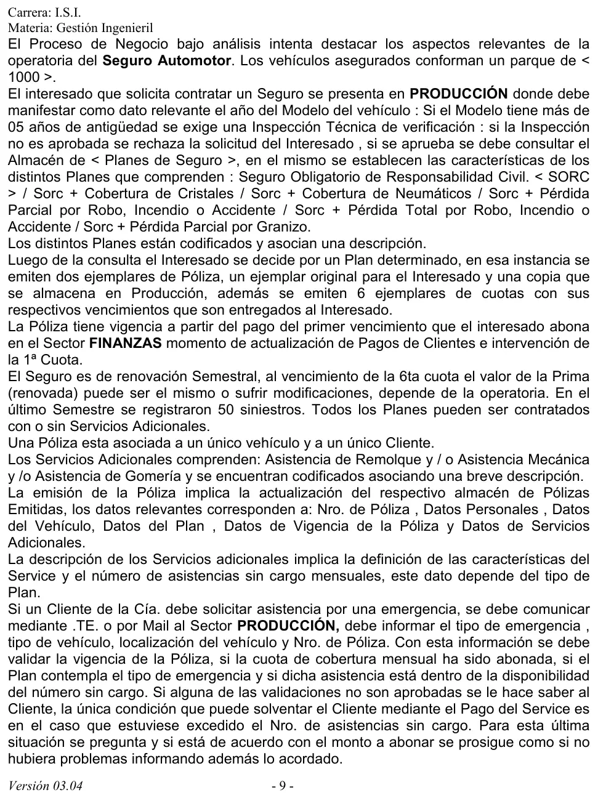
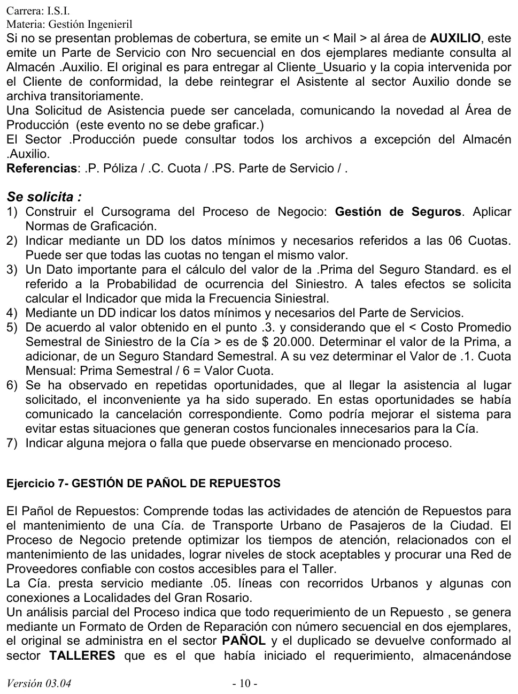

Práctica, ejercicio 6: gestión de seguros
Práctica de la cátedra, 2017
Enunciado





Propuesta de respuesta
Respuesta no verificada. La propuso Luta Studios con inteligencia artificial y ningún docente la revisó. Puede tener errores.
1. Cursograma
Una columna por sector, con los símbolos del resumen de un alumno que usa la materia. Son dos circuitos, la contratación y la asistencia. La inspección técnica y la asistencia en el lugar son procesos no representados, porque la narrativa no los detalla. El pedido del cliente y el mail a Auxilio son información, con flecha punteada, porque no viaja un documento. La cancelación no se dibuja, como pide la narrativa. Tocá el dibujo para verlo en pantalla completa.
2. DD de las 6 cuotas
Cuota = nro_poliza + nro_cuota + fecha_vencimiento + importe
+ (fecha_pago) + estado(d)
estado(d) = <pendiente | pagada>Hay un registro por cuota, seis por póliza, y se identifica con nro_poliza y nro_cuota, que va de 1 a 6. El importe va en cada cuota y no en la póliza, porque las cuotas pueden no valer lo mismo. fecha_pago es opcional porque se llena recién cuando Finanzas cobra.
3. Indicador de frecuencia siniestral
Tiene un siniestro cada 20 vehículos por semestre, o sea, un 5 %. Se usa como la probabilidad de que un vehículo asegurado tenga un siniestro en el semestre.
4. DD del parte de servicio
Parte_Servicio = nro_PS + fecha + hora + nro_poliza
+ cod_servicio + tipo_emergencia + tipo_vehiculo
+ localizacion + (monto_service) + conformidad_clientenro_PS es el número secuencial. cod_servicio es el remolque, la mecánica o la gomería. monto_service solo va si el cliente se excedió en las asistencias sin cargo y aceptó pagar. conformidad_cliente es la firma en la copia que vuelve a Auxilio.
5. Prima y cuota del seguro standard semestral
La prima a adicionar sale de la probabilidad de siniestro de la consigna 3 por el costo promedio de un siniestro.
6. Asistencias que llegan cuando ya se canceló
El cliente cancela en Producción, pero la narrativa no dice que la cancelación llegue a Auxilio. Además, Producción no puede consultar el almacén Auxilio, así que tampoco sabe si el parte ya se emitió.
Mejora propuesta.
- Que toda cancelación quede registrada con el número de póliza y la hora, y que Producción se la mande a Auxilio por el mismo medio que el pedido, con el número del parte.
- Que Auxilio confirme que la recibió y se la pase al asistente que está en camino.
- Que el parte tenga un estado, por ejemplo emitido, en camino, cancelado o cumplido, y que Producción lo pueda consultar.
Así no se mueve un asistente por un problema que ya se resolvió.
7. Fallas y mejoras
- Producción no puede ver las asistencias usadas. Para validar si quedan asistencias sin cargo necesita los partes, que están en el almacén Auxilio, el único que no puede consultar. Conviene que Auxilio le informe cada asistencia o que se le dé acceso de lectura a ese dato.
- Pedidos por teléfono sin registro. Es una de las fallas típicas del material. Cada pedido de asistencia debería quedar registrado con número, fecha y hora, aunque llegue por teléfono.
- Un mail no es un documento. El aviso a Auxilio no tiene número ni confirmación. Un pedido de asistencia numerado, con acuse, evita que se pierda.
- La copia del parte nunca se archiva en forma definitiva.
- La renovación de la prima no tiene regla. La narrativa dice que puede cambiar «según la operatoria». Se puede atar a la frecuencia siniestral de la consigna 3, recalculada cada semestre.
- El rechazo por inspección no deja constancia para el interesado.
Respuesta no verificada. Puede tener errores.
Se armó con las páginas del parcial, secciones Cursograma, Diccionario de datos, Indicadores de gestión y Fallas y mejoras.
Quedó en duda: La prima de la consigna 5 se calculó como frecuencia siniestral por costo promedio, que es la forma más directa de usar los dos datos que da la consigna. El material del Drive no da esa fórmula. La narrativa no dice dónde se archiva la copia de la póliza, más allá de que queda en Producción, ni quién lleva la cuenta de las asistencias sin cargo usadas. El cursograma y el DD salen de material de alumnos.